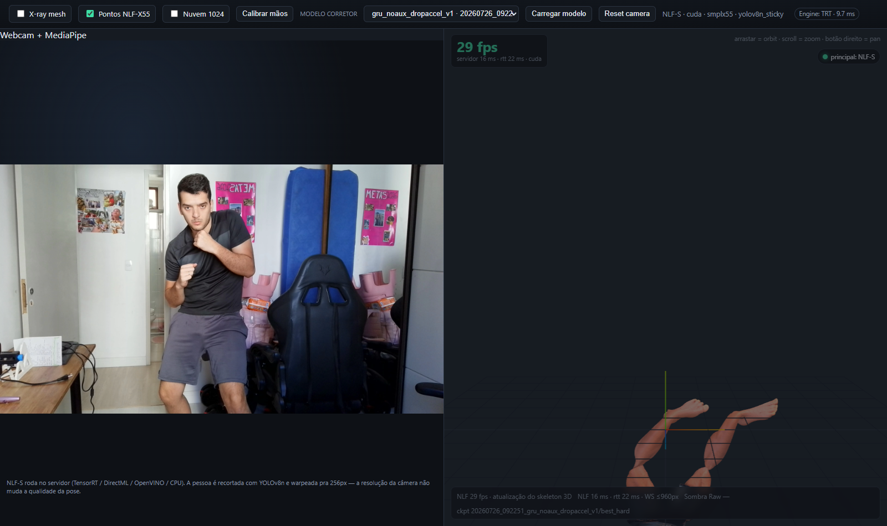

Fotos de benchmark pelo caminho /live
Webcam simulada 960×540, 30 FPS, 6 s por foto. Inferência nova via WebSocket, NLF-S x55 / TensorRT / RTX 3060. Imagens inspecionadas. A foto é espelhada como na interface. Renders das rodadas aquecidas; clique para abrir a captura individual. O teste usa fotos estáticas e não comprova continuidade de pronação em movimento.
Relatório e limites do teste · Métricas Fighter Web (~29,83 atualizações/s) · Métricas Boxeador
01 · WIN_20260801_13_57_25_Pro.jpg — Boxeador / Fighter Web
02 · WIN_20260801_13_57_30_Pro.jpg — Boxeador / Fighter Web
03 · WIN_20260801_13_57_35_Pro.jpg — Boxeador / Fighter Web
04 · WIN_20260801_13_57_40_Pro.jpg — Boxeador / Fighter Web
05 · WIN_20260801_13_57_44_Pro.jpg — Boxeador / Fighter Web
06 · WIN_20260801_13_57_50_Pro.jpg — Boxeador / Fighter Web
07 · WIN_20260801_13_57_54_Pro.jpg — Boxeador / Fighter Web
08 · WIN_20260801_13_58_00_Pro.jpg — Boxeador / Fighter Web
09 · WIN_20260801_13_58_05_Pro.jpg — Boxeador / Fighter Web
10 · WIN_20260801_13_58_10_Pro.jpg — Boxeador / Fighter Web
11 · WIN_20260801_13_58_15_Pro.jpg — Boxeador / Fighter Web
12 · WIN_20260801_13_58_20_Pro.jpg — Boxeador / Fighter Web
13 · WIN_20260801_13_58_26_Pro.jpg — Boxeador / Fighter Web
Inicialização problemática — pontos de entrada incorretos, antes da rodada aquecida